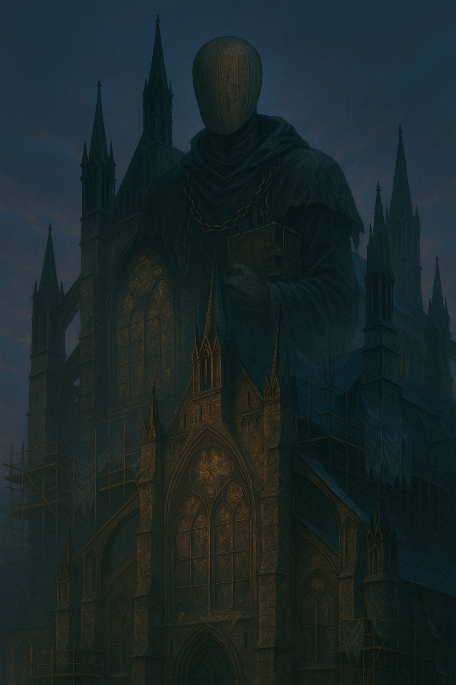
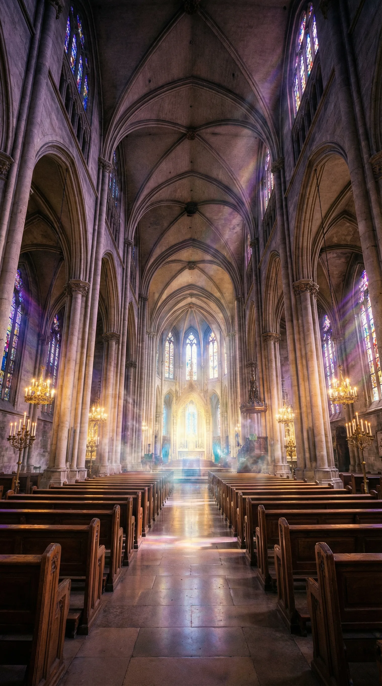
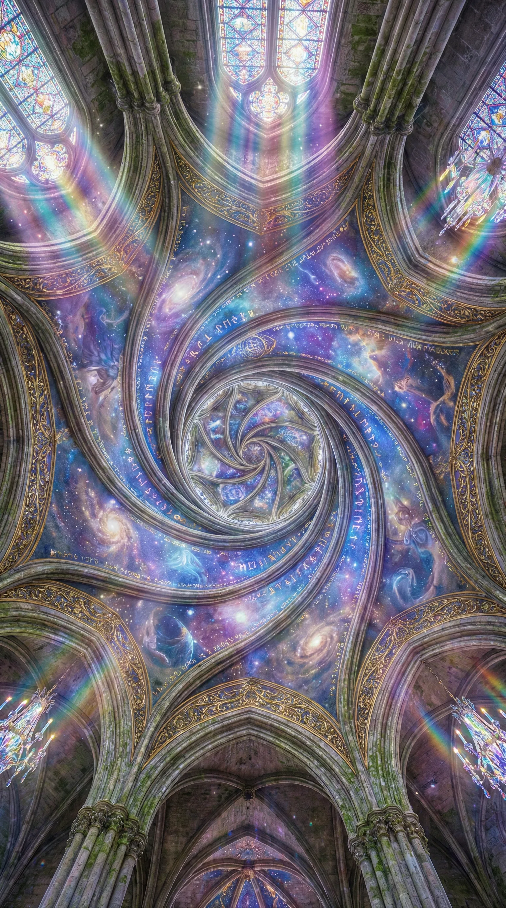

The Church
Summary
Religious organization dedicated to combating supernatural threats through divine authority
Description
The Church operates as the spiritual and militant arm of faith in a world where the supernatural is undeniably real. While publicly maintaining the facade of conventional religious practice, their inner circles wage holy war against entities and forces that threaten humanity's soul and survival.
Origins & Mission
Founded centuries ago when the first clerics discovered that faith could manifest as tangible power against darkness, The Church has evolved from a small group of believers into a worldwide organization. Their mission is clear: protect humanity from supernatural corruption and maintain the sanctity of the divine order.
Unlike The Order with their academic approach to magic, The Church views supernatural power through a religious lens. They believe divine authority flows from unwavering faith and righteous purpose. Their warriors—Paladins, Exorcists, and Inquisitors—channel this faith into weapons against those they deem threats to spiritual purity.
Structure
The Church maintains a dual structure. Its public face operates traditional religious institutions, providing spiritual guidance to ordinary congregations who remain ignorant of the supernatural. Behind this facade, secret chapters train warriors, maintain armories of blessed weapons, and coordinate operations against supernatural threats.
The Vatican serves as their ultimate authority, though regional Cardinals command significant autonomy. In London, The Church maintains several sanctified grounds that serve as both refuges and staging areas for their operations.
Philosophy & Methods
The Church takes a hardline approach to the supernatural. They view most magical creatures as inherently corrupt, believing that only through divine grace can supernatural power be wielded righteously. This absolutist stance creates friction with organizations that take more nuanced approaches.
They condemn technomagic as blasphemy, seeing it as an attempt to bypass divine will through artificial means. Holy Items receive grudging acceptance only because Fate herself crafted them, though some within The Church question even this.
Current Operations
In recent times, The Church finds its resources stretched thin. The frequency of supernatural incidents overwhelms their capacity to respond. Internal debates rage over whether their rigid doctrines serve or hinder their mission. Some younger members advocate for cooperation with groups The Church has historically opposed, while traditionalists view such suggestions as dangerous compromise.
Gallery






London is watching
Do you belong here?
The city is divided. Ancient powers move through its streets. Take the official assessment and discover which faction truly claims your loyalty.
Start Assessment